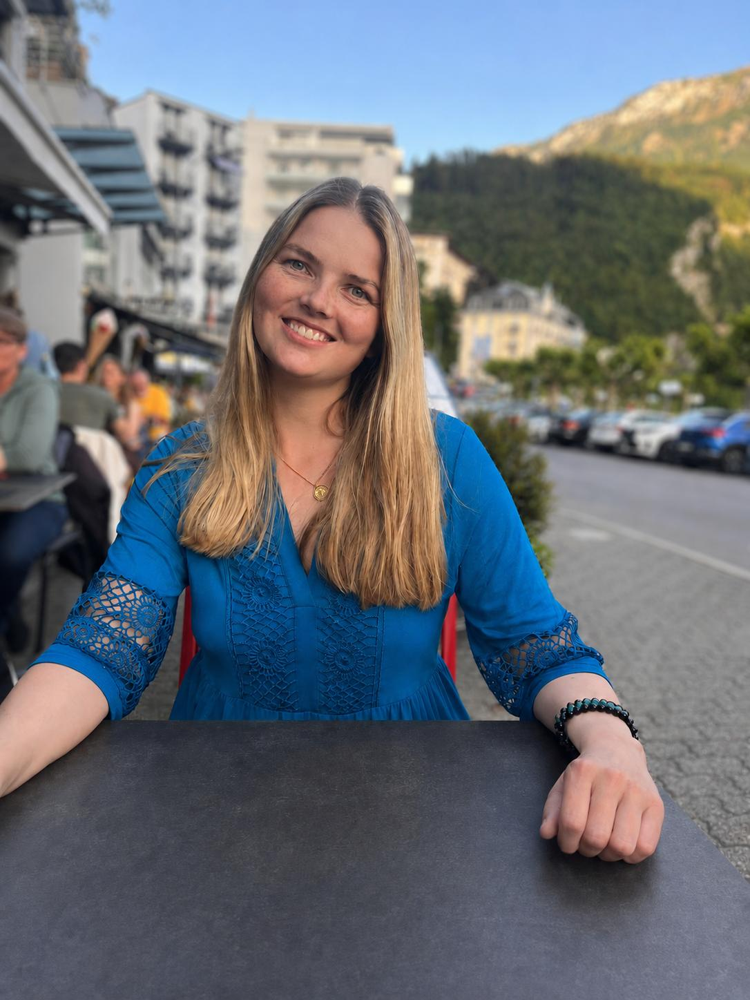

Sandra – diamoon-art

Farbe, Fantasie und die Alpen
Ich bin Sandra, wohne in Altdorf und arbeite als Polygrafin bei einer Zeitung.
In meiner Freizeit male und zeichne ich gerne. Meine Kunst entsteht dadurch, dass ich eine wilde Fantasie habe und meine Bilder in meinem Kopf unbedingt auf Papier bringen will. Da ich eine rege Gefühlswelt habe und ein feines Gespür für Farbnuancen, sind meine Bilder sehr dynamisch, farbintensiv und ausdrucksstark – mit klaren Linien und weichen Farbverläufen.
Ich arbeite gerne mit Bleistift, Kugelschreiber, Fineliner und Buntstiften bei Zeichnungen. Beim Malen verwende ich oft Acrylfarbe oder Aquarell, da es optimal zu meinem lebendigen und schwungvollen Kunststil passt.
Meine Kunst ist erzählerisch, illustrativ und naturalistisch mit einer ganz eigenen, dynamischen Bildsprache. Meine Bilder sollen Gefühle auslösen, dazu anregen sie länger zu beobachten und sich eigene Gedanken dazu zu machen. Ich will bewusst die Begeisterung in uns wecken, Licht und Farbe in diese oft graue und langweilige Alltagswelt zu bringen, um uns zu erinnern, warum wir wirklich da sind.
Inspiration aus Altdorf
Mitten in den Schweizer Alpen, umgeben von Bergen, Wäldern und Seen, tanke ich nicht nur Kraft, sondern finde auch neue Inspiration für meine Werke.
Die Natur ist meine liebste Lehrmeisterin der Schöpfung – sie malt in den schönsten Farben und Formen, die man sich vorstellen kann.